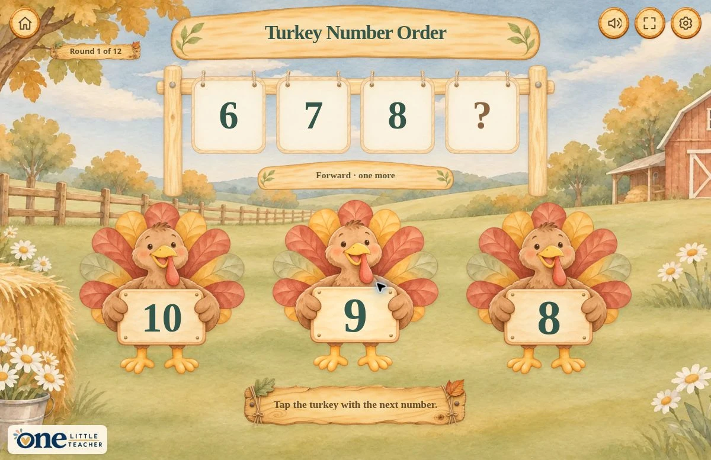
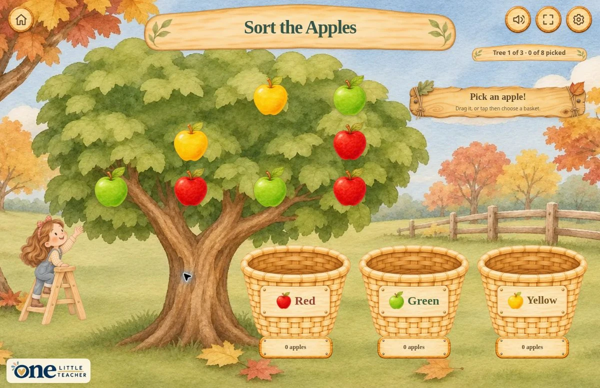
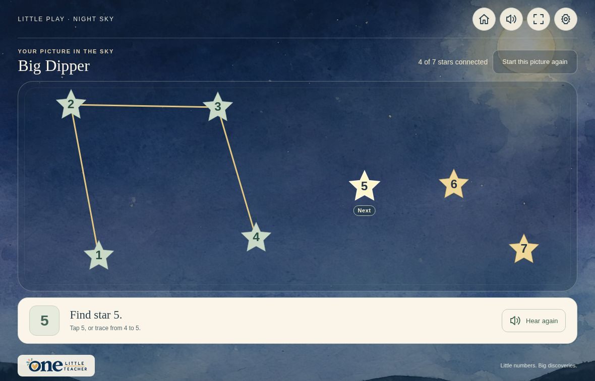
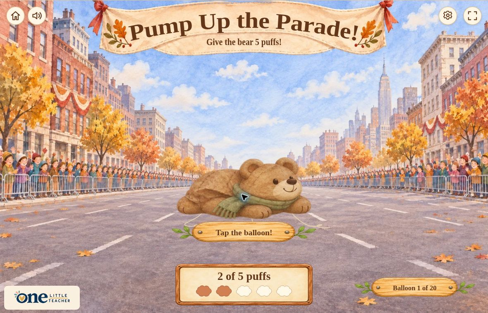
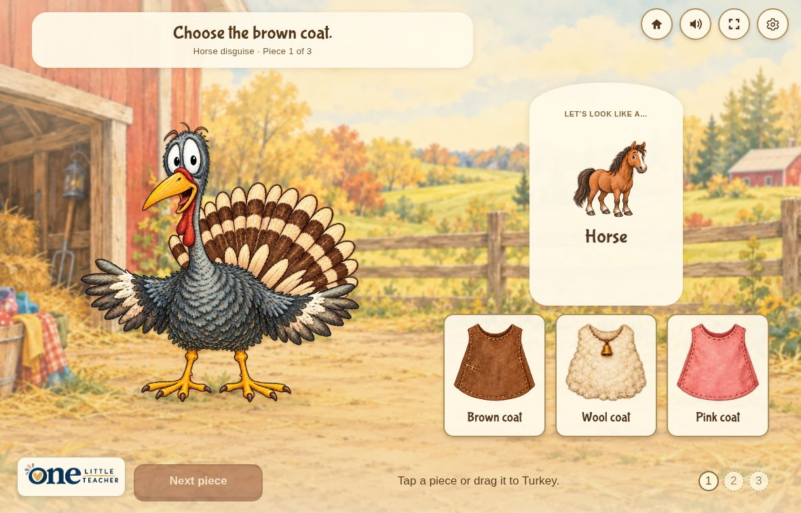
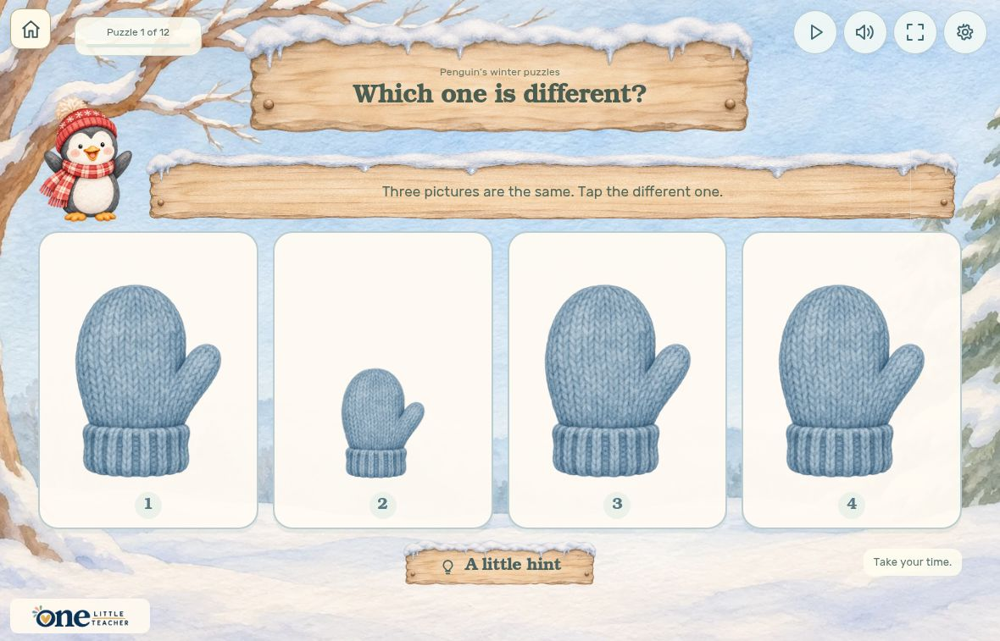
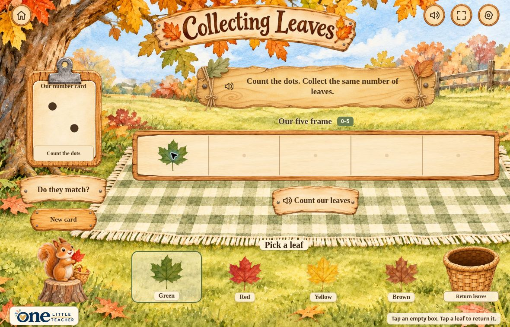
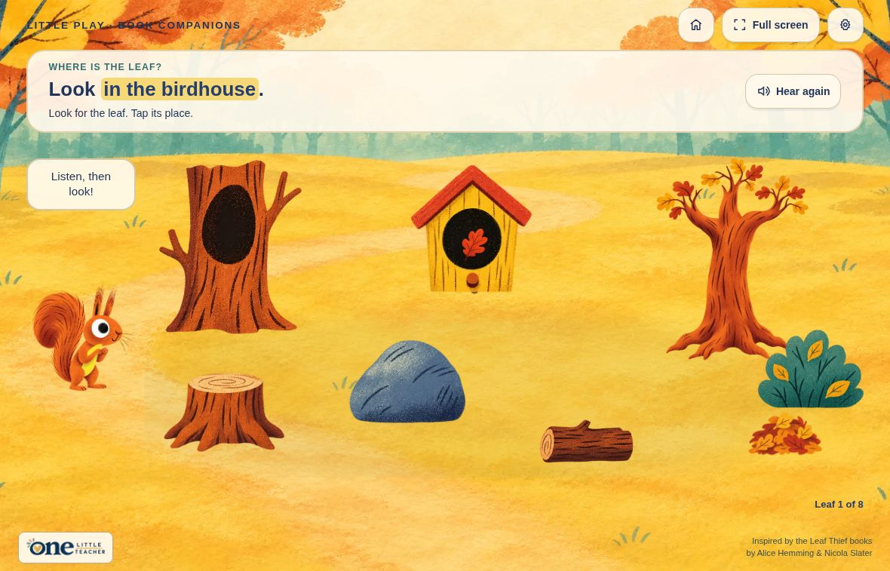
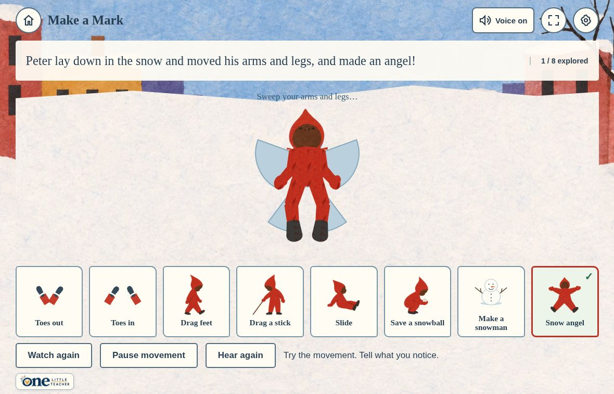

Number order
Made for real classrooms
Find a little inspiration for your next learning adventure.
Little learners. Lovely discoveries.
Seasonal games for curious minds and joyful classrooms.
3 games

















No games match these choices yet. Try “turkey,” “snowball,” or clear your filters.
Teaching Apps listings remain paused for review. Free Teacher Tools are ready to explore.
Already have a game? Visit My Games. Existing Little Labels customers can open Little Labels. For help with an existing purchase, email Melina.